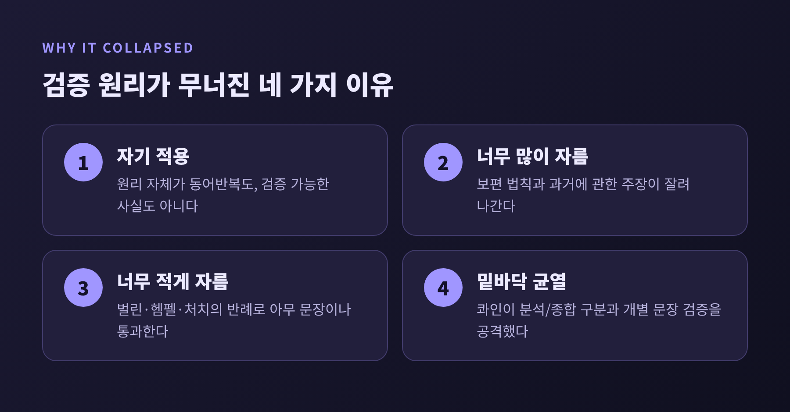

논리실증주의의 검증 원리 — 검증할 수 없는 말은 정말 무의미할까
이번 글에서는 비엔나 학파 논리실증주의의 검증 원리를 정리해 보려 합니다. 이 원리는 문장이 의미를 가지려면 경험으로 검증할 수 있거나, 정의와 논리만으로 참이어야 한다고 말합니다. 그리고 이 기준은 결국 자기 자신에게도 되돌아옵니다.
요약하면 이렇습니다. 검증 원리는 형이상학을 걷어내려던 가장 야심 찬 시도였습니다. 그러나 원리 자체가 검증되지 않았고, 기준을 고칠수록 새 반례가 나왔으며, 콰인이 그 밑바닥의 분석/종합 구분을 흔들었습니다.
■ 비엔나 학파는 무엇을 하려 했나
1922년, 모리츠 슐리크는 빈 대학에서 에른스트 마흐가 맡았던 자연철학 교수직을 이어받습니다. 그를 중심으로 목요일 저녁마다 토론 모임이 열렸습니다. 카르납은 1926년에 합류했고, 구성원에는 노이라트, 한, 파이글, 바이스만, 괴델 등이 있었습니다. 1929년에는 선언문 「과학적 세계 파악: 빈 학파」를 내놓았습니다.
모임이 정독한 책은 비트겐슈타인의 『논리-철학 논고』였습니다. 거기서 "명제의 의미는 그것을 검증하는 방법"이라는 생각이 건너왔습니다. 처음에는 주로 형이상학과 과학을 가르는 경계선으로 쓰였습니다.
목표는 분명했습니다. 철학을 과학의 언어를 분석하는 일로 바꾸고, 과학적으로 말할 수 없는 것은 철학에서도 걷어내자는 것이었습니다.
■ 검증 원리: 의미 있는 문장의 두 부류
검증 원리의 핵심은 한 문장으로 압축됩니다. 어떤 문장이 인지적으로 의미 있으려면 경험으로 검증할 수 있거나, 논리의 동어반복이어야 합니다. 둘 다 아니라면 그 문장은 거짓이 아니라 무의미합니다. 이 점이 중요합니다.
옆방에 고양이가 있다는 문장을 떠올려 보시기 바랍니다. 방문을 열어 보면 맞는지 틀린지 알 수 있습니다. 의미 있는 문장입니다. 반면 "절대자는 시간을 초월한다"는 어떤 관찰로도 맞고 틀림을 가릴 수 없습니다. 이 기준으로는 무의미합니다. 에이어가 사이비 명제의 본보기로 든 "절대자는 진화와 진보 속으로 들어가지만 그 자체는 진화하거나 진보할 수 없다"도 같은 처지입니다.
여기서 '검증'은 실제로 확인했느냐를 묻지 않습니다. 원리상 확인할 방법이 있느냐를 묻습니다. 과거나 먼 곳의 일에 관한 문장도, 확인할 방법이 원리상 있다면 의미를 얻습니다.
■ 분석 명제와 종합 명제
이 원리의 한쪽 날개는 분석/종합 구분입니다. 분석 명제는 정의나 논리 형식만으로 참이 됩니다. 필연적이지만 세계에 새 정보를 주지 않습니다. 종합 명제는 세계가 어떠한지를 말하는 우연적 명제입니다.
흄은 이미 관념들의 관계와 사실의 문제를 나누었습니다. 칸트는 여기에 '종합적 선험'을 더했습니다. 빈 학파는 이를 받아들이지 않았습니다. 대신 논리와 수학을 분석적, 곧 동어반복으로 해석했습니다. 수학이 왜 확실한지는 설명하되, 경험을 넘어서는 지식은 인정하지 않는 길이었습니다.
그 결과 문장은 세 갈래로 나뉩니다. 이 가운데 형이상학, 신학, 윤리, 미학의 진술은 세 번째 칸으로 떨어집니다.
■ 에이어와 카르납: 형이상학을 걷어내다
1936년 에이어는 『언어, 진리, 논리』를 냅니다. 옥스퍼드를 졸업한 뒤 빈에서 슐리크 곁에서 공부하고 돌아와 약 2년 반 만에 쓴 책입니다. 신이나 초월적 실재에 관한 주장은 "문자 그대로 무의미"하다고 썼습니다. 신이 있다는 말도 없다는 말도 경험으로 가릴 수 없기 때문입니다.
윤리도 같은 길을 갑니다. 에이어에게 도덕 판단은 사실의 서술이 아니라 감정의 표현이었습니다. 이 정서주의 때문에 책은 큰 논란을 샀습니다. 그 논란이 오히려 책을 20세기에 가장 많이 팔린 진지한 철학서의 하나로 만들었다고 합니다.
카르납의 칼끝은 하이데거를 겨눕니다. 논문 「논리적 언어 분석을 통한 형이상학의 극복」에서 그는 "무(無)가 스스로 무화한다" 같은 문장을 최악의 무의미한 형이상학으로 조롱했습니다. 다만 그 논증의 세부까지는 이 글에서 다루지 않겠습니다. 한 가지는 덧붙일 만합니다. 카르납은 형이상학이 인지적으로는 무의미해도 정서적으로는 의미가 있을 수 있다고 보았습니다.
■ 기준을 고칠수록 새 반례가 나왔다
문제는 기준이 처음부터 불안했다는 점입니다. 모든 관찰이 한 문장을 결정적으로 확정해야 한다는 '강한 검증'을 요구하면 "모든 사람은 죽는다", "비소는 독이다" 같은 보편 법칙이 사라집니다. 과거에 대한 주장도 함께 잘려 나갑니다.
그래서 에이어는 '약한 검증'을 택했습니다. 그 문장의 참과 거짓을 가리는 데 어떤 관찰이라도 관련이 있느냐고 묻는 방식입니다. 보편 법칙은 살았습니다. 대신 너무 많은 것이 통과하기 시작했습니다.
이사야 벌린의 반례가 대표적입니다. "절대자는 게으르다"라는 문장에 "절대자가 게으르다면 이것은 붉다"라는 전제를 붙입니다. 그러면 "이것은 붉다"라는 관찰 문장이 도출됩니다. 보조 전제를 풀어 두면 어떤 문장이든 의미를 얻는다는 뜻입니다. 헴펠도 "이것은 붉고 절대자는 게으르다"라는 연언을 들어 같은 구멍을 지적했습니다. 처치는 어떤 문장 s에 대해서도 s를 간접적으로 검증 가능하게 만드는 복합 문장을 구성해 보였습니다.
1946년 재판에서 에이어는 직접 검증과 간접 검증을 나누어 기준을 고칩니다. 하지만 헴펠은 1950년 이후 정리를 이렇게 맺습니다. 엄격한 검증은 과학 법칙을 배제하고, 반증만 쓰면 존재 진술이 배제되어, 어떤 후속 제안도 만족스럽지 못하다는 것입니다.

■ 검증 원리 자신은 검증되는가
가장 날카로운 물음은 밖이 아니라 안에서 나옵니다. "의미 있는 문장은 검증 가능하거나 동어반복이어야 한다"는 문장은 어느 쪽인가요? 관찰로 확인할 수 있는 사실이 아닙니다. 그렇다고 정의만으로 참인 동어반복도 아닙니다. 자기 기준으로 보면 이 원리는 무의미해 보입니다. 포퍼도 이 점을 짚었습니다.
옹호하는 쪽의 답은 이랬습니다. 에이어와 헴펠은 원리가 사실에 대한 주장이 아니라 정의, 곧 언어를 쓰는 방식에 대한 제안이라고 했습니다. 카르납도 개혁된 언어를 위한 제안으로 보았습니다.
일리는 있습니다. 하지만 값을 치릅니다. 제안이라면 따르지 않을 자유도 있습니다. 형이상학자에게 "당신 말은 무의미하다"고 선언하던 위력은 "우리는 이런 언어를 쓰기로 했다"는 취향의 표명 수준으로 내려옵니다.
■ 콰인: 밑바닥을 흔든 두 도그마
1951년 콰인은 『철학 리뷰』에 「경험주의의 두 도그마」를 발표합니다. 두 도그마란 분석/종합 구분, 그리고 모든 의미 있는 진술이 직접 경험에 관한 말로 환원된다는 환원주의입니다. 콰인은 분석과 종합 사이의 경계가 그어진 적이 없다고 했습니다.
논증은 이렇게 전개됩니다. "어떤 미혼 남자도 결혼하지 않았다"는 논리만으로 참입니다. 그런데 "어떤 총각도 결혼하지 않았다"가 분석적이려면 '총각'과 '미혼 남자'가 같은 뜻이어야 합니다. 사전이 그렇다고 알려 준다고요? 사전은 이미 동의성을 전제하고 만든 책입니다. 서로 바꿔 써도 참이 유지되는지로 정의해 보면 어떨까요. 심장 있는 동물과 신장 있는 동물은 우연히 같은 대상을 가리키므로, 바꿔 써도 참이 유지됩니다. 그렇다고 같은 뜻은 아닙니다. 필연적으로 바꿔 쓸 수 있다고 못 박으면 분석성을 이미 쓴 셈이라 순환에 빠집니다.
두 번째 도그마는 문장 하나하나가 홀로 경험의 시험을 받는다는 그림입니다. 콰인은 정반대를 말합니다.
신념의 총체는 가장자리에서만 경험과 맞닿는 직물과 같습니다. 어긋나는 관찰이 나오면 직물 어디를 고칠지는 선택의 문제입니다. 논리 법칙까지 수정 대상이 될 수 있다고 콰인은 보았습니다. 그렇다면 '이 문장만 따로 검증해 보겠다'는 검증 원리의 전제는 어디에 설 자리가 있을까요.
물론 반론도 있었습니다. 그라이스와 스트로슨은 1956년 동의성을 의심하면 의미 자체를 의심하게 된다고 응수했습니다. 카르납은 자연어의 분석성과 형식 언어의 분석성을 구분하며, 콰인의 비판은 앞의 것을 겨눌 뿐이라고 답했습니다. 분석성은 사실이 강요하는 것이 아니라 틀을 짜는 선택이라는 입장이었습니다. 두 사람이 다툰 것은 사실의 문제라기보다, 어느 길이 과학에 더 쓸모 있느냐였다는 전언도 남아 있습니다. 카르납의 답변은 1990년에야 출판되었습니다.
■ 포퍼의 반증주의와는 무엇이 다른가
짧게만 구분하겠습니다. 포퍼는 1934년 『탐구의 논리』에서 반증 가능성을 내놓았습니다. 그러나 이는 과학과 비과학을 가르는 구획 기준이지, 문장의 의미를 가르는 기준이 아닙니다. 포퍼는 검증 원리가 보편 일반화를 무의미하게 만들고 스스로도 무너진다고 비판했습니다.
아인슈타인의 상대성이론은 중력이 빛을 휘게 한다는 위험한 예측을 내놓았고, 1919년 에딩턴의 관측으로 확인되었습니다. 포퍼는 어떤 관찰도 반증하지 못하는 정신분석과 마르크스주의를 과학보다 신화에 가깝다고 보았습니다. 다만 포퍼에게 형이상학은 무의미한 것이 아니라 과학이 아닌 것일 뿐입니다.
■ 남은 것은 무엇인가
학파의 운명도 짧게 적어야겠습니다. 1936년 6월 22일 슐리크는 빈 대학 계단에서 옛 제자 요한 넬뵈크의 총에 맞아 숨졌습니다. 넬뵈크가 밝힌 동기는 슐리크의 반형이상학 철학이 자신의 도덕적 제동을 무너뜨렸다는 것이었고, 다른 자료는 한 여학생을 둘러싼 질투를 전합니다. 어느 쪽이 진실인지는 단정하기 어렵습니다. 학파는 얼마 지나지 않아 정치적 압력 속에 해체되었고, 구성원 다수는 미국과 영국으로 망명했습니다.
운동이 끝난 뒤의 평가는 냉정했습니다. 존 패스모어는 1967년 논리실증주의가 "철학 운동이 죽을 수 있는 만큼 죽었다"고 썼습니다. 에이어 본인도 1976년 인터뷰에서 "거의 전부가 틀렸다"고 말했습니다. 다만 정신에서는 옳았다는 취지도 함께 덧붙였다고 합니다.
정리하면 이렇습니다. 검증 원리는 의미의 기준으로는 실패했습니다. 그러나 그 실패가 남긴 물음은 지금도 유효합니다. 주장에는 증거와 시험의 길이 열려 있어야 한다는 감각 말입니다. 콰인은 그 감각을 문장 하나가 아니라 믿음 전체의 그물에 두는 쪽으로 옮겼을 뿐입니다.
"검증할 수 없는 말은 무의미하다." 이 문장이 스스로 검증되지 않는다는 사실이 이 철학의 한계이자 가장 정직한 가르침이었다고 저는 생각합니다. 다시 읽겠느냐고 물으신다면, 기준이 무너진 자리까지 읽어 볼 가치가 있다고 답하겠습니다.